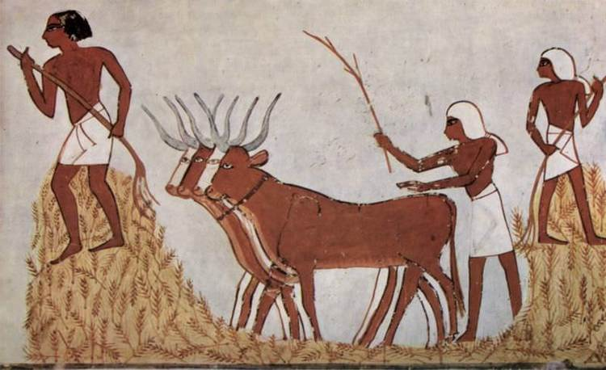

HISTORY OF AGRICULTURE

Humans invented agriculture during the Neolithic era, or the New Stone Age, which occurred between 7,000 and 10,000 years ago. There were eight Neolithic crops: emmer wheat, einkorn wheat, peas, lentils, bitter vetch, hulled barley, chick peas, and flax. The Neolithic era ended with the development of metal tools.
Pre History
For most of our existence, humans were hunter-gatherers. This means that people lived a nomadic lifestyle, moving with the seasons to follow the food supply. As the glaciers retreated and plant life patterns and growth areas changed in response, it meant that the need to move so often became slightly less essential - though undoubtedly the lifestyle carried on for thousands of years as people sought to maximize their resource acquisition (4, p574-5). Hunter-gatherer societies would have known which crops were best to exploit with each season.
The “hunter-gatherer” moniker can be a misnomer as it is believed today that nomadic communities didn't suddenly just decide one day to stop moving and to set up permanent settlements - though the reasons for the transition have been explored in great deal and is still not settled (4, p561-3). It is likely that some degree of semi-nomadic lifestyle developed where people simply set up camps for several years at a time, cordoning off areas of wild crops that had the most abundant resources (5, p146). It is also likely that they had herds of livestock that they took with them wherever they moved, keeping them secure to exploit for milk, meat, fur and other resources. The need to protect stores of food for the next season may also have played a part.
Archaeologists and palaeontologists have traced the origins of farming to around 10,000 years ago, to somewhere in the Indus Valley, and possibly as a separate development in China along the Yangtze River (6). It is known that humans first domesticated crops and later livestock in great enough numbers to recognize the signs of deliberate exploitation (5, p141-3).
Early Civilization
Early civilization can be considered a boom time in agricultural science and technology. Around 5500 BC (7, p26-28), the Sumerian civilization of the Middle East and other early pre Greco-Roman civilizations understood the need for a specialized agricultural workforce for their societies to thrive. It is in this period that we saw the invention of irrigation amongst other things, and this specialised workforce, and focus on agricultural technology allowed the development of the first cities. In turn, these drove the first written laws and led to the development of complex societies. From this point of view, agriculture drives civilisation: including religious practices, social attitudes and legal codes.
Ancient Egypt had one of the most complex societies of the ancient world before the rise of the Greek civilization, and it was mostly thanks to their agricultural system (7, p27-8). The River Nile relied heavily on the seasons and each year, the river would flood its banks and part of the surrounding countryside (called The Inundation). Their civilization and indeed their religious structure (8), was built around the life-giving nature of the River Nile and the kingdom's heavy reliance on the river and delta system (9). Most of Egypt was and still is desert with a few key oases, which means that the agriculture centered on a very small part of the country.
The Greeks and Romans took much of their agricultural technology from other civilizations with which they had contact - most notably those of the ancient Near East such as Mesopotamia, via Sumeria. From Egypt, those societies took direct influence once the country was conquered by Alexander the Great and later by the Roman Republic. It was here at the birth of modern civilization that we saw true large-scale animal and plant agriculture (10). Technology may not have advanced a great deal, but the processes made agriculture efficient enough to sustain the empire's large cities, making it a necessary industry.
Early To Modern Civilization
The Middle East continued to see much innovation in the agricultural industries, something that historians refer to as The Arab Agricultural Revolution (10). This was thanks to the diversity of the local topographies, the crops grown in the Middle East and Indus Valley that European societies coveted, and later acted as a trade bridge between Far East and Europe (11).
In Europe, little changed before the rise of the kingdoms around the 11th century when the Church became major landholders and traders, leaders, educators and held both temporal and spiritual powers. The systems instigated through feudalism, whether secular lords or church holdings, sought to improve yields with the growing population, and naturally we saw significant technological advances in this period too (12). It was a period of massive selective cross-breeding, particularly in animal livestock, and systems of organisation. In some areas of Europe, we can see the remnants of the agricultural system today in the form of medieval ridge and furrow strip farming. It is thanks to the monasteries of Europe that we see advances into what we call “marginal landscapes” (13) - areas where crops do not grow in great numbers the we see agricultural engineering on an unprecedented scale. Floodplains were drained, wild woodlands converted to plains and bracken cleared for pasture, areas with low fertility were converted or altered to make proper use of them (14); for example, barley grows well on salty soil, making it ideal to grow on floodplains. Modern agricultural practices saw its final modern development in the 16th century when farmers came up with crop rotation - the idea that one could increase yields by switching land use around every year in order not to exhaust the soil. One year the field would have crops planted, the following year it would be used for livestock and the third it would be kept fallow (15). Though earlier societies had used it to a certain extent, only in the 16th century was the method perfected.
Modern Farming
Modern farming began around the 18th century in what is generally referred to as “The British Agricultural Revolution” when several advances and changes were made to farming in a short space of time that saw massive increases in yield and a more efficient process. The three field crop rotation system was replaced with a four field system and sweeping enclosure acts regulated land management, selective cross-breeding began on an industrial scale to increase crop size as well as yields creating several cultivars in the process. Animal husbandry also improved, leading to a greater surplus than had been permissible under the old system. It is said that these changes permitted the industrial revolution and even greater concentration of urban development, fueling the empire. How so? More crops for fewer workers, better methods of keeping and replacing nutrients in the soil meant that more people could work in industry. When the Corn Laws in England were repealed, it began the global food economy; about the same time, Charles Darwin's Theory of Evolution put agriculture on the modern path of a science as we began to understand the development of crops.
The next changes would not be until the War Years when the military powers developed (and needed with rationing) intensive farming; it has been a god-send, and since 1970, global cereal production has quadrupled (20). New plastics as well as the development of nitrates (19) allowed even greater yields once more and it has through this system, now in place for almost a century, allowed greater access to food much more cheaply. Yet for some, the environment has paid a price that some agricultural scientists have tried to address.
Ecological Age
“Sustainability” is the buzzword today as we look to balance several conflicting needs - to protect the environment and to instigate practices that protects it while providing for the growing needs of the future population growth. Today, our food supply feeds 7 billion people and there is still enough surplus for more going forward (20). We know though that some of these practices have had an adverse effect on the land. Too many trees are being cut down to make way for agricultural land (livestock and crops), and soils are becoming exhausted quickly while destroying ecosystems.
There have been questions about the use of some herbicides and pesticides and the last few decades have seen many harmful substances banned in North America and the EU. We are still agreeing on global standards and trying to redefine the parameters of what is agriculturally and ecologically sound, catering to our crop needs while not damaging it for future generations. Agricultural technology may possibly be on the verge of another revolution as biotech moves to the forefront of agricultural science.
To Know More About Agriculture Browse The Below Links:
1.http://www.maine.gov/doe/agriculture/
2.http://www.futurist.com/articles-archive/future-of-agriculture/
3.http://pages.ucsd.edu/~dkjordan/arch/neolithic/Neo1-AgRev.html
4.http://classes.uleth.ca/200701/anth1000b/foraging%20to%20farming.pdf
5.http://dash.harvard.edu/bitstream/handle/1/12211496/S0959774300001815a%202.pdf?sequence=2
6.http://lib.gig.ac.cn/local/nature/449,459.PDF
7.http://pleasanton.k12.ca.us/avhsweb/murphyc/web/apworld/summer/farm.pdf
8.http://fathom.lib.uchicago.edu/1/777777190168/
9.http://www.jstor.org/stable/263080?seq=1#page_scan_tab_contents
10.http://www.jstor.org/discover/10.2307/2116954?sid=21105910120473& uid=3738032&uid=2&uid=4
11.http://www.hort.purdue.edu/newcrop/hort_306/text/lec22.pdf
12.http://books.google.co.uk/books?id=SaJlbWK_-FcC&pg=PA270&lpg=PA270&dq=medieval+china+agriculture&hl=en#v=onepage&q=medieval%20china%20agriculture&f=false
13.https://books.google.co.uk/books?id=adHIaVe-zBgC&pg=PA69&lpg=PA69&dq=Living+in+a+Vale+of+Tears.+Cistercians+and+Site+Management+in+France&source=bl&ots=ggKINyyIzH&sig=dtP4PvcY3A9DDZboHF4KsxfuaRE&hl=en&sa=X&ei=5TrnVPTBGOmu7Ab5h4GQAg&ved=0CCMQ6AEwAA#v=onepage&q=Living%20in%20a%20Vale%20of%20Tears.%20Cistercians%20and%20Site%20Management%20in%20France&f=false
14.http://irs.ub.rug.nl/dbi/43789b8bae214
15.https://www.rhs.org.uk/advice/profile?pid=124
16.http://books.google.co.uk/books?id=OMNoS-g1h8cC&pg=PA867&dq=artistic+potato&hl=en#v=onepage&q=artistic%20potato&f=false
17.http://www.fs.fed.us/rm/pubs_rm/rm_gtr272/rm_gtr272_181_188.pdf
18.http://www.pnas.org/content/102/41/14694
19.http://www.hort.purdue.edu/newcrop/hort_306/text/lec32.pdf
20.http://cedarcreek.umn.edu/biblio/fulltext/t1860.pdf